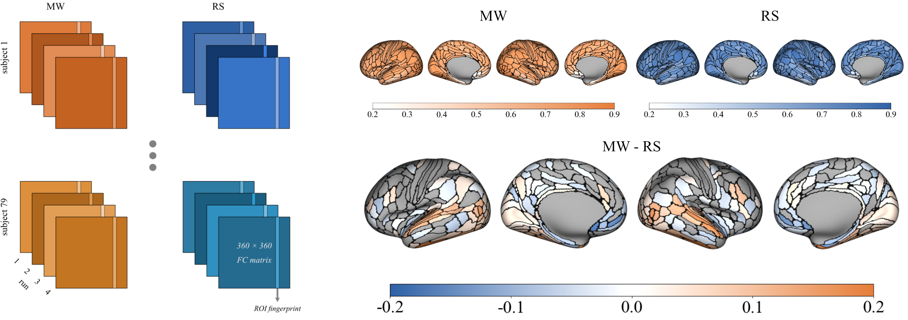

Functional Connectivity Reliability and Individual Variability: Movie-Watching vs. Resting-State
Functional connectivity is a very popular approach in capturing the functional organization of the human brain. As the connectivity patterns differ under different cognitive states and in different cognitive tasks, the paradigm under which connectivity is obtained will determine what aspects of functional organization are observed. Resting-state (RS) is the most popular paradigm for connectivity studies, yet because different individuals' experiences vary in terms of mental processes and cognitive states during scan time, the obtained connectivity patterns show inflated individual variability. On the other hand, paradigms such as movie-watching (MW) or narrative listening synchronize the sensory and perceptual input across participants. It has been shown that the brain activity of the people who are watching the same movie synchronizes in time in certain regions. In this study, I investigate how much of this inter-subject synchrony extends to the connectivity patterns. I also compare resting-state and movie-watching paradigms in terms of their similarities, differences, inter-subject reliability, generalizability across the group, and their ability to predict idiosyncratic patterns. The findings in this study will help researchers and clinicians make more informed decisions about how to observe functional connectivity according to their specific application.